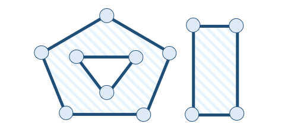

5.2. Tipos Geométricos¶
Atualmente, o modelo geométrico e as operações espaciais encontradas nos diversos sistemas geoespaciais são baseados na especificação conhecida por OGC Simple Feature [41], [40]. Essa especificação padroniza o nome e as definições dos tipos geométricos bem como a semântica das operações espaciais, em especial, os relacionamentos espaciais (ou topológicos). Iremos nos referir a essa especificação com a sigla OGC-SFS.
A Figura 5.3 apresenta o modelo geométrico definido na OGC-SFS.

Figura 5.3 - Diagrama de classes do modelo geométrico da OGC Simple Feature.
Fonte: Adaptada de [41].¶
Como pode ser observado, são definidas classes para representações de objetos geométricos na forma de pontos, curvas, superfícies e coleções geométricas. Além disso, todos os tipos geométricos estão associados a um sistema de referência espacial, que é usado para descrever o sistema de coordenadas no qual o objeto geométrico encontra-se definido.
Os objetos geométricos definidos por essa hierarquia de classes pode existir no espaço \(R^2\), \(R^3\) ou \(R^4\). Geometrias no \(R^2\) possuem pontos com valores de coordenadas em \(x\) e \(y\). Geometrias no \(R^3\) possuem pontos com valores de coordenadas em \(x\), \(y\) e \(z\) ou \(x\), \(y\) e \(m\). Geometrias no \(R^4\) possuem pontos com valores de coordenadas em \(x\), \(y\), \(z\) e \(m\). Em geral, a coordenada \(m\) representa algum tipo de medida.
A Tabela 5.2 ilustra graficamente objetos associados aos tipos geométricos representados pelas classes do diagrama da Figura 5.3.
( a ) |
( b ) |
( c ) |
|---|---|---|
|
|
|


( d ) |
( e ) |
( f ) |
|---|---|---|
|
|
|


( g ) |
( h ) |
( i ) |
|---|---|---|
|
 |
|


O tipo Point (Figura 5.3 e Tabela 5.2a) representa pontos no espaço \(R^2\), \(R^3\) ou \(R^4\). Um ponto é um objeto geométrico \(0\)-dimensional (dimensão topológica), isto é, não possui comprimento, largura, altura, ou volume, representando uma única localização no sistema de coordenadas. A fronteira de um ponto é o conjunto vazio. Em geral, utilizamos esse tipo de geometria para representar atributos de feições associadas a ocorrências ou eventos, como incidência de crimes ou doenças.
O tipo Curve (Figura 5.3) representa a imagem contínua de uma linha. Uma curva é um objeto geométrico \(1\)-dimensional (dimensão topológica), isto é, possui comprimento mas não possui largura, altura, ou volume. Em geral, utilizamos elementos geométricos das subclasses de Curve para representar entidades lineares tais como rodovias, linhas de transmissão de energia elétrica, dutos, arruamentos, entre outras. Uma curva pode conter coordenadas com \(m\) ou \(z\).
A subclasse LineString representa linhas com interpolação linear entre pontos consecutivos (Figura 5.3 e Tabela 5.2b). A fronteira de uma linha aberta é definida como sendo os pontos extremos dessa linha. O primeiro ponto é chamado de ponto inicial (start point) e o último ponto da sequência, ponto final (end point).
A subclasse LinearRing representa linhas fechadas, denominadas anéis, cujo ponto inicial e final são coincidentes (Figura 5.3 e Tabela 5.2c). A fronteira de um anél é definida como o conjunto vazio. Essa classe é o bloco básico para construção de polígonos (classe Polygon).
O tipo Surface representa objetos geométricos \(2\)-dimensional (dimensão topológica), isto é, objetos que possuem área (largura e altura) mas não possuem volume. Esse tipo geométrico pode ser utilizado para representar entidades discretas como áreas de cultivo, unidades de conservação florestal, divisões territoriais, entre outras.
A subclasse Polygon representa polígonos que podem ser formados por um anel externo e zero ou mais anéis internos (buracos ou ilhas). A Tabela 5.2d representa um polígono formado apenas por um anel, que é o anel externo. O polígono mostrado na Tabela 5.2e representa um polígono formado por um anel externo e um anel interno. A fronteira de um polígono é definida como sendo o conjunto de todos os anéis que o delimitam.
O diagrama da Figura 5.3 ainda contém classes que representam coleções de geometrias. As classes MultiPoint, MultiLineString e MultiPolygon representam, respectivamente, coleções homogêneas de pontos (Tabela 5.2f), linhas (Tabela 5.2g) e polígonos (Tabela 5.2h). A classe GeometryCollection representa coleções geométricas formadas por qualquer combinação de outros elementos geométricos, inclusive das coleções homogêneas. A coleção heterogênea mostrada na Tabela 5.2i é composta de um polígono, uma linha e um ponto.
Em geral, o tipo GeometryCollection é introduzido nos sistemas para acomodar o resultado de operações espaciais complexas sobre os tipos de geometria elementares. Por exemplo, o resultado da operação de intersecção entre dois polígonos pode resultar em um conjunto de pontos, linhas e polígonos, de forma que é necessário um contêiner especial para acomodar esse resultado.
O documento da OGC-SFS [41] também define o conjunto de operações sobre os tipos geométricos do diagrama da Figura 5.3. A seção a seguir irá detalhar as operações que possibilitam determinar os relacionamentos espaciais entre objetos espaciais.